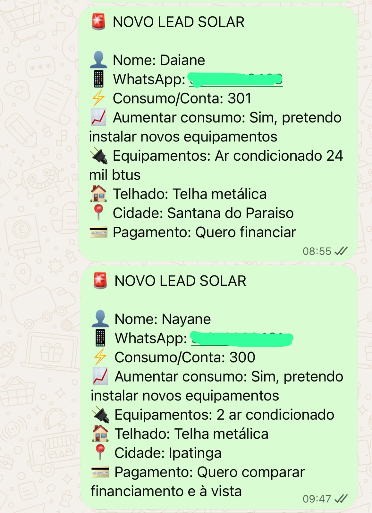
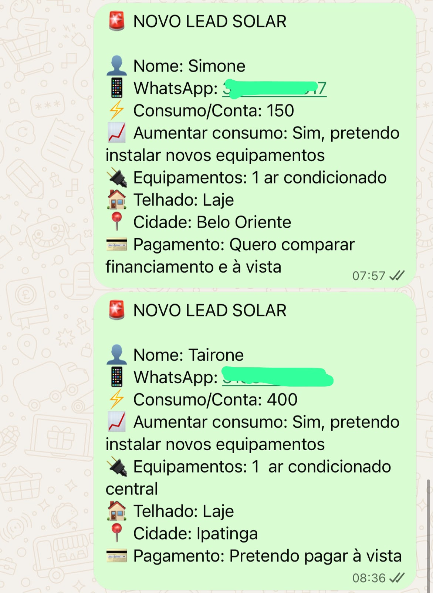
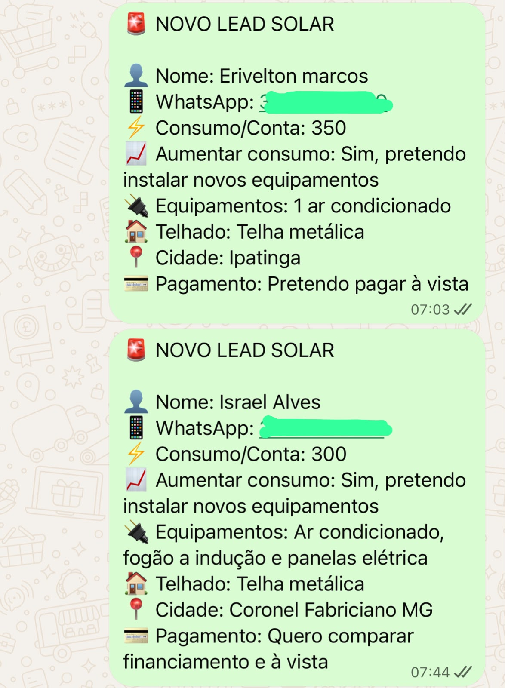

Copie a estrutura que eu uso para fazer o potencial cliente avançar antes de chegar ao seu WhatsApp — e receba oportunidades com as informações necessárias para gerar o orçamento, sem passar o dia qualificando contato por contato.



Não nasceu da teoria. A lógica vem da rotina real de captação e venda no mercado solar.
O potencial cliente avança por uma jornada que coleta os dados importantes antes de consumir seu tempo.
Agora multiplique pelas horas gastas toda semana perguntando consumo, cidade, telhado e forma de pagamento para contatos que desaparecem.
Pagamento único. Acesso à estrutura e às aulas de implementação.
QUERO COPIAR A ESTRUTURA →A estrutura não promete venda automática. Ela reduz trabalho manual e faz o potencial cliente chegar com mais contexto para você avançar no orçamento.
Antes de trabalhar exclusivamente com marketing para energia solar, eu também vendi sistemas. A estrutura foi pensada a partir da rotina comercial real e do que precisamos saber para avançar um orçamento.
Não. Não. Você recebe minha estrutura pronta e aprende exatamente o que precisa trocar para adaptar à sua empresa.
Não. Não. Você recebe a estrutura pronta e aprende a copiar, personalizar e colocar para funcionar.
Não. Ele chega com informações importantes para o orçamento. O fechamento continua dependendo do seu atendimento e proposta.
Receba oportunidades com contexto e use seu tempo para orçar, negociar e vender.
QUERO COPIAR ESSA ESTRUTURA →